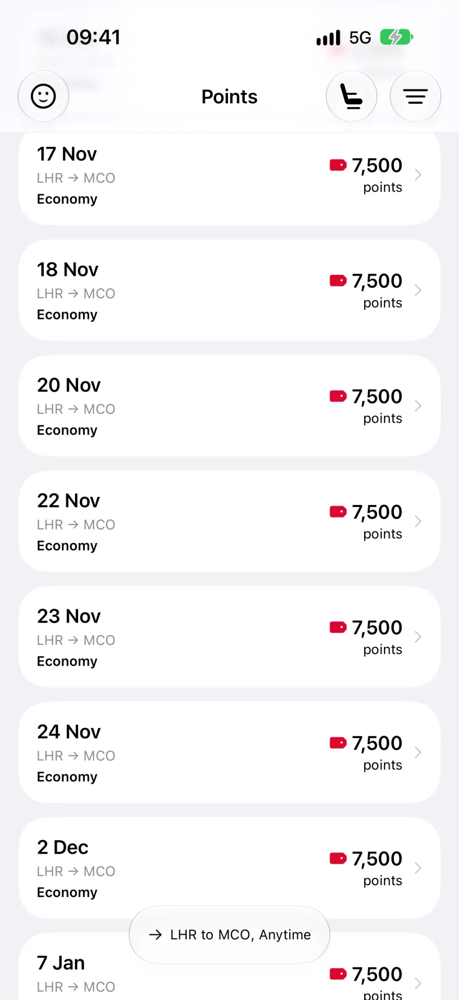
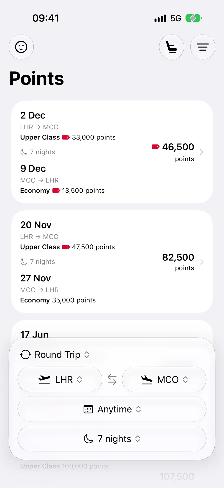
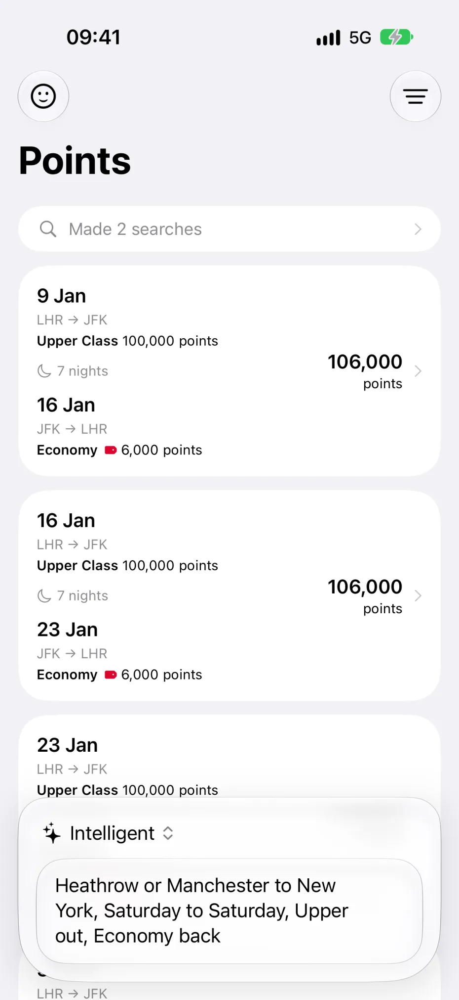
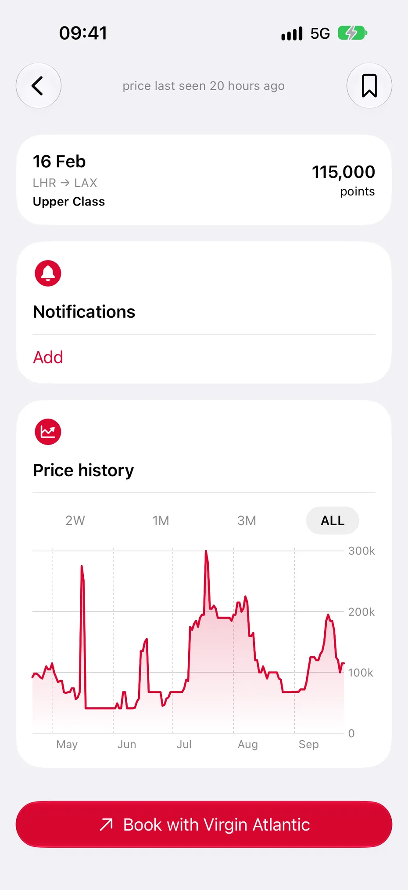
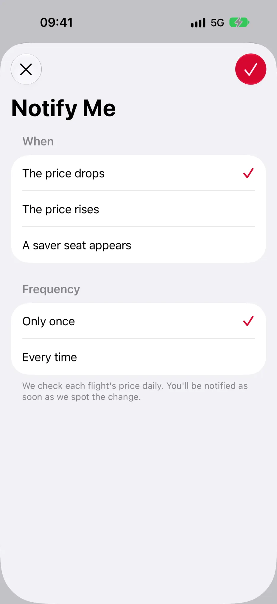
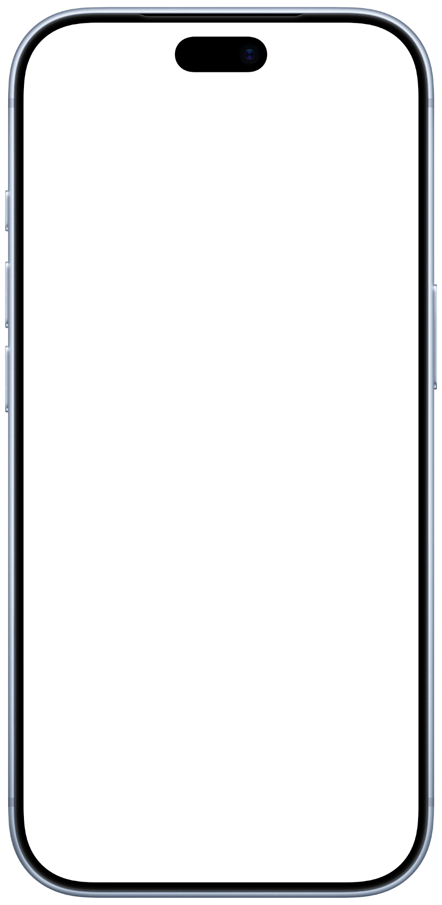

Points
A quick and easy Virgin Atlantic reward seats finder.
We track every cabin, on every route, for every day of the 11-month booking window. Saver seats get a little red tag, and you can save flights and trips to come back to, with a couple of weeks of price history to help you judge when to book.
Points Plus adds alerts when prices drop, 11 months of price history, and AI search (it is 2026 after all).
Made by Sam. Not affiliated with or endorsed by Virgin Atlantic.





